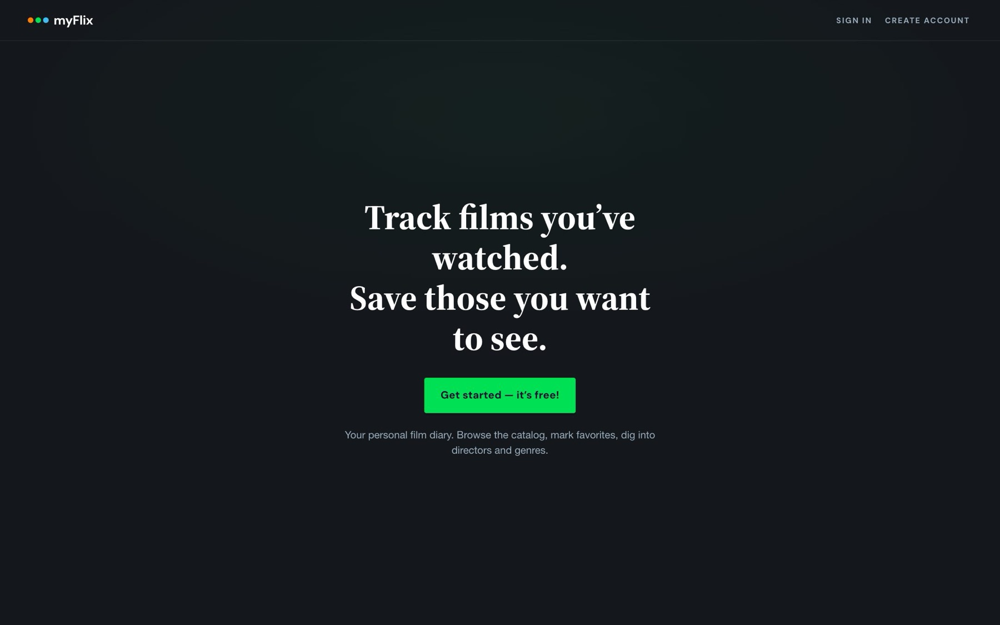
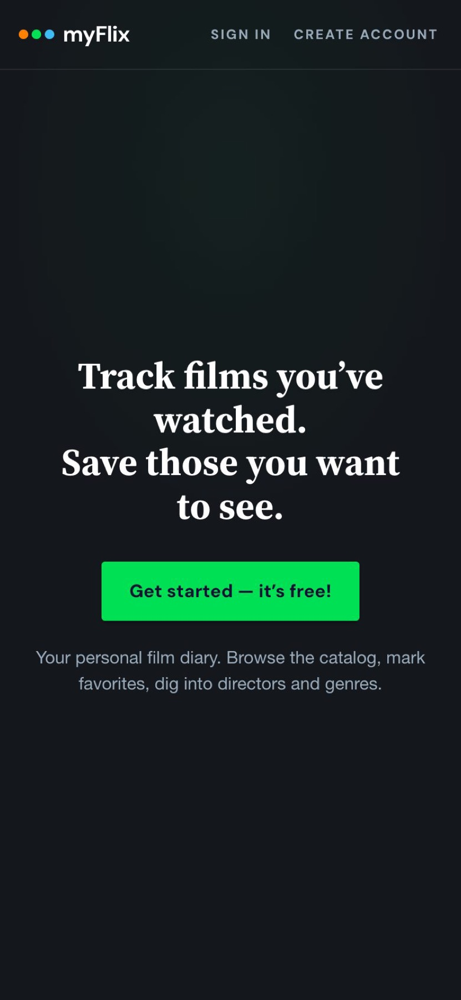

Angular · 2026 refresh
myFlix
A personal film diary. Browse the catalog, save favourites, dig into directors and genres.

Context
A bootcamp app that had quietly broken
myFlix started in 2022 as my Career Foundry full-stack project. By 2026 the live link pointed at an old build with no API behind it, so sign-up failed and half the posters were gone.
Rather than start over, I rebuilt it: a fresh API, a cleaner client, and a look borrowed from the film app I actually use.
Concept
Borrowing Letterboxd’s calm
Dark charcoal, a serif headline, one green call to action, and posters doing the talking. The welcome page says what the app is in one line, and signing up drops you straight into the catalog.

Build
Small fixes that make it feel solid
Search and genre chips filter the 40-title catalog instantly. Favourites sync from the API response instead of guessing locally, and route guards keep signed-out visitors on the welcome page.
Renaming your account issues a fresh token, and movie ids stay stable when the catalog is reseeded, so saved favourites never break.
Outcome
From broken link to working app
The refresh shipped as a static Angular build on GitHub Pages:
- 40-title seed with working posters
- Search, genre filters and favourites
- JWT auth with route guards and token refresh
- Clear error messages when the free API is waking up

Made solo
Client
Design and Angular
Luke P.F. Pons
API
Express and JWT
Luke P.F. Pons